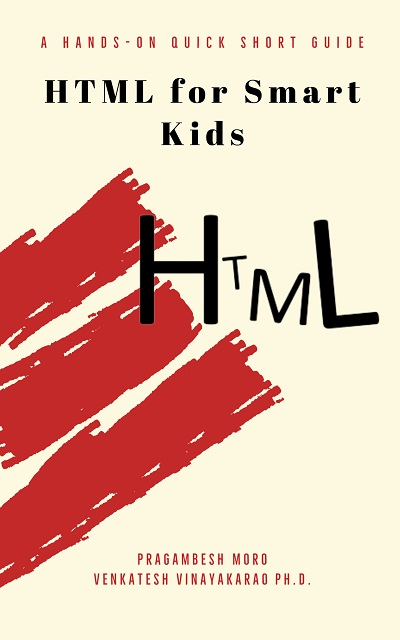

|  |
Thanks for reading the "HTML for Smart Kids" book. Code: The HTML code used in the book can be downloaded from here. Description: Schools may insist kids to work on a software project. HTML is an easy and nice way to get started with technology. Do you wish to try HTML? Do you find the existing books too big, too deep? If yes, here is a quick short hands-on guide. In this book, you will learn to create beautiful HTML pages with images, tables, links and lists. This books is best suited for students of grade 6 and above. This book is written by a 7th grader for a curious student of 6th grade or above. The other co-author has experience of more than 11 years working in popular software companies such as Microsoft and Yahoo. These two authors have put together a book to enable small kids to learn and code using HTML. All they will need is a computer with basic knowledge of web browsers. The book is short, contains screenshots of output, and is also exercise driven. It comes with two fully coded HTML projects. Wish you an awesome time coding with HTML. If you are looking to buy this book, visit Amazon. |